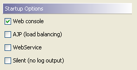
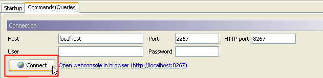
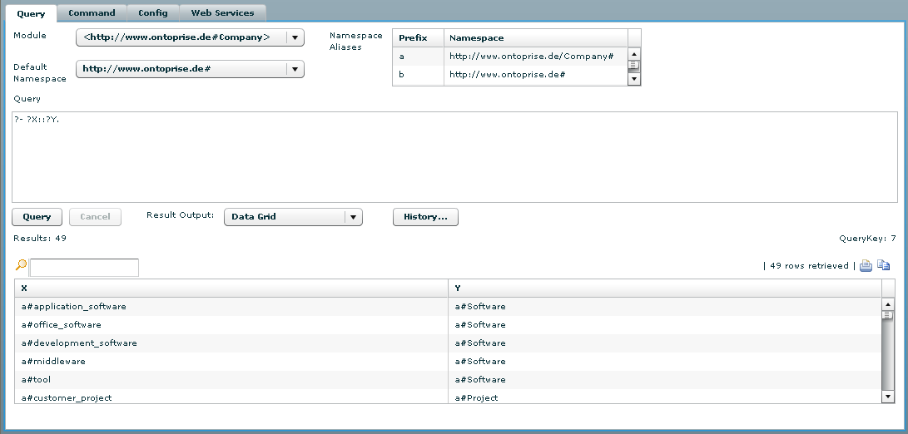
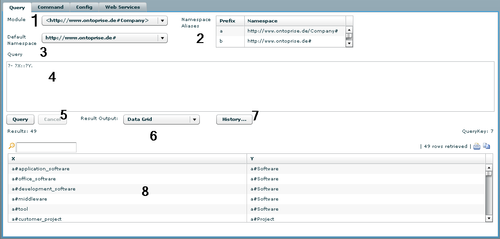
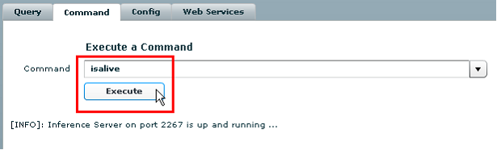
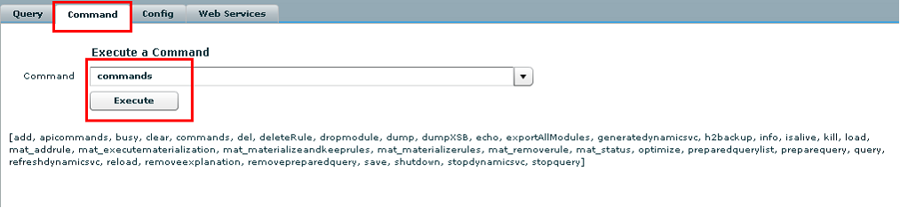
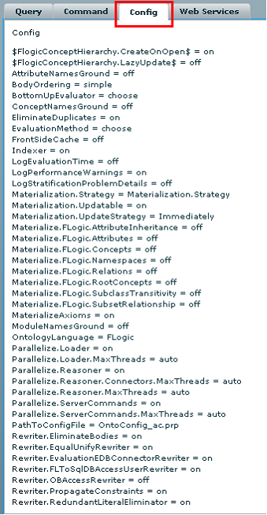
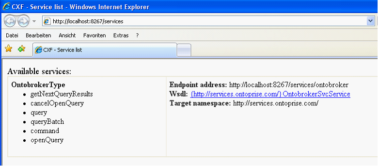

|

|
|
Webconsole |
|
|
|
|
Webconsole |
To start the OntoBroker Webconsole just flag the relevant checkbox as shown on the screenshot.

...and then press "Connect" OntoBroker to start the OntoBroker Webconsole :

The Webconsole starts on localhost on port 8627. Type localhost:8267 in the input window of your browser and press <ENTER>. The Webconsole is now displayed. Now queries and commands can be executed in a comfortable way.

Within the webconsole, there are several options for handling a query:

1 |
Module |
specifies which module is loaded |
2 |
Namespace Aliases |
Choose a prefix for the accordant namespace |
3 |
Default Namespace |
Choose the default namespace |
4 |
Query |
Type in the query here |
5 |
Query/Cancel |
Run the query or cancel the request |
6 |
Result Output |
Define the output format of the query. |
7 |
History |
The history of requests (queries) is displayed here |
8 |
Result |
The result of the query is displayed here |
On the Command tab, commands can be executed.


A list of all of the server commands can be found in the relevant chapter. On the Config tab all of the OntoBroker settings are displayed at a glance. Change your settings in the OntoConfig.prp.

On the Web Services tab, information on any Webservice started is displayed.

Just click on Click here to see... to get a list of all of the available Web services.

In the next step you get information on the Web service methods, the endpoint address and a link to the WSDL.